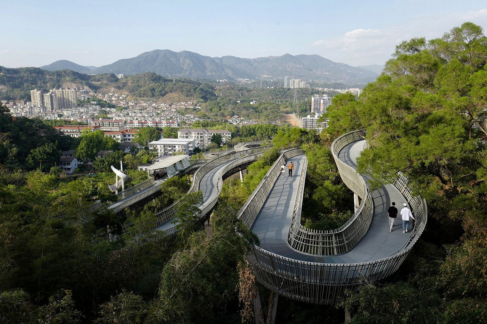
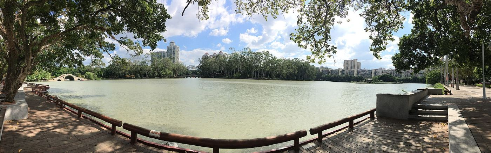

福州8处低预算漫步地：门票省下来，买点芋泥
好看的街巷、树荫和江风，不一定要先买联票。这 8 处都是公共空间，适合慢慢走；园里的展馆、商铺、游船和活动要不要钱，另外看。

别一次走完：三组里挑一组
- 老城组：三坊七巷＋朱紫坊，有兴趣再加一段西湖。
- 江边组：上下杭＋一段闽江之心，有体力再去烟台山。
- 看展或森林组：福建博物院＋西湖，或者福道单独半天。
1. 三坊七巷：逛街巷，不用进所有馆
看古厝外观、马鞍墙和榕树，留 2–3 小时。爱心树顺路看，拍完让开通道；故居和专题展另看票务。
2. 上下杭：白天看建筑，晚上看街巷
留 1.5–2 小时，看河道、会馆和老商埠。逛公共街巷不花钱，进馆、消费另算。

3. 烟台山：给坡道和休息都留时间
留 2–3 小时，挑老建筑和江边的一小段走。可以从上藤站一带接驳。街区能逛，不代表每栋建筑都能进。

4. 福道：挑一段走，不用走完
预留半天，含往返。出发前定好入口、出口，下雨天注意路滑。免费，但要提前看路线。

5. 福建博物院：看当期展览
留 2–3 小时。官方口径是不用预约，特展和团队另看要求；一般周一闭馆。

6. 西湖公园：湖边坐一会儿，也算完成行程
留 1–1.5 小时，可以和博物院连着走。游船这些项目另外收费。

7. 朱紫坊：古厝街巷，别打扰居民
留 1 小时左右，可以和三坊七巷放在同一天。走公共通道，想喝茶再进茶室。
8. 闽江之心：先选一个具体地方
留 1 小时左右，按你在哪一岸挑一段走。想看中洲岛远景，先找好滨江的公共位置；灯光不是每天一样，游船另收费。

小贴士
- 出发前查三件事：开放安排、当天交通、自己的体力。
- 省门票不等于要多走路，累了就坐。
想看海，就另留一天
想延伸到琅岐岛，另留时间。海边散步不要门票，停车、租工具这些服务看现场。

停留时长和路线是我们的建议，开放时间、票务、交通和店铺营业会变，出发前再查一下当天的信息。